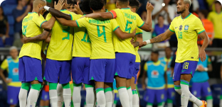
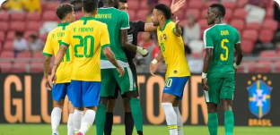
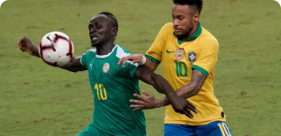

Friendly matches. Brazil lost to Senegal, Germany lost to Colombia
Malcom got into the starting lineup of the Brazilian national team for
the first time in his career. The Zenit midfielder started a friendly
game against Senegal from the first minute.

Vinicius about his assistant's conflict with the guard before the
Brazil game
Vinicius Junior was dissatisfied with the attitude of his assistant at
the Brazil-Guinea game. Before a friendly game, a security guard at
the Espanyol stadium took a banana out of his pocket, pointed it at a
black adviser to a Real Madrid player and said: "Hands up, this is my
gun."

Chilavert on Mbappe's words about South American football
Jose Luis Chilavert reacted to Kylian Mbappe's words about South
American football. In May 2022, the forward of PSG and the French
national team said: "In South America, football is not developed in
the same way as in Europe. Therefore, if you look at the recent World
Championships, European teams have constantly won."